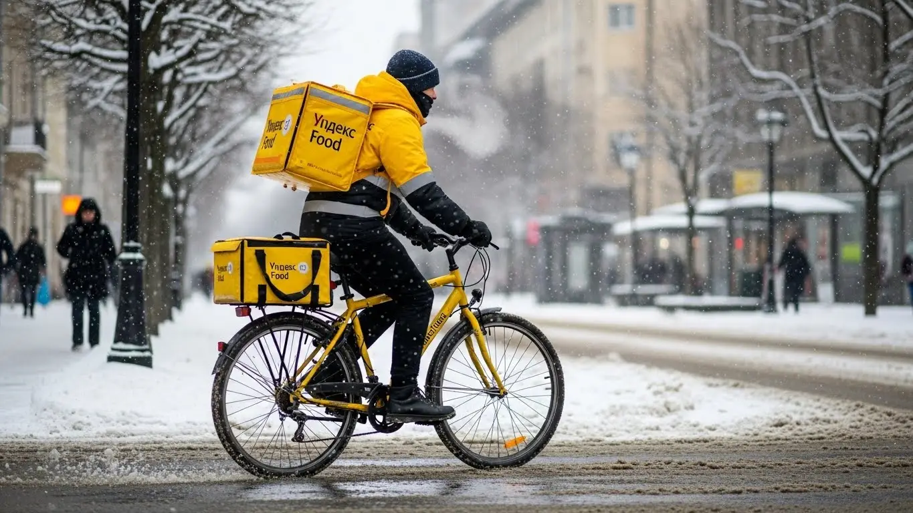

Работа курьером Яндекс Еды в Ханты-Мансийске в 2025-2026 годах
- Работа курьером Яндекс Еды в Ханты-Мансийске: для кого эта вакансия и что вы получите
- Сколько вы будете зарабатывать курьером в Ханты-Мансийске: калькулятор дохода и разбор выплат
- Реальный заработок курьера в Ханты-Мансийске: смены и месячный доход
- График работы и форматы занятости
- Требования к кандидату и документы
- Самозанятость, налоги и юридическая чистота
- Пошаговое оформление и первый выход на линию в Ханты-Мансийске
- Пешком, на вело или на авто: что выгоднее в Ханты-Мансийске
- Районы, маршруты и «топовые» зоны заказов в Ханты-Мансийске
- Безопасность, страховка, штрафы и оплата простоя
- Плюсы и возможные минусы работы курьером в Ханты-Мансийске
- Реальные истории и отзывы курьеров из Ханты-Мансийска
- Ответы на главные вопросы о работе курьером Яндекс Еды в Ханты-Мансийске
- Короткие ответы на главные вопросы
- Итоги и ваш следующий шаг
Все города
Думаешь, как заработать в Ханты-Мансийске, крутя педали или баранку, но боишься, что доход съедят штрафы, а машина превратится в ведро после наших дорог и пробок на Мира или Объездной? Слышал, что курьеры гребут деньги лопатой, но что-то подсказывает — не всё так просто? Правильно подсказывает. Забудь про рекламные сказки. Здесь — только реальный опыт работы курьером Яндекс Еды в нашем городе, с его морозами, коротким летом и внезапным спросом.
Поверь, без понимания местной «кухни» 9 из 10 новичков в Хантах либо разочаровываются в первый же месяц, либо работают в минус. Потому что реальный заработок — это не цифра в приложении. Это то, что осталось после вычета налога, бензина, амортизации и обеда. Это знание, где в час пик будет «гореть» карта, а где ты прождешь заказ полчаса, любуясь на Иртыш. Большинство сливаются на одних и тех же ошибках: берут невыгодные заказы в отдаленные районы, не учитывают рельеф города или попадают под санкции, не зная правил. Чтобы сразу видеть актуальные условия, требования и заполнить анкету, лучше всего изучить официальную страницу про работу курьером Яндекс Еда в Ханты-Мансийске.
В этом гиде мы по косточкам разберём всё, что касается работы курьером Яндекс Еды в Ханты-Мансийске. Мы честно посчитаем, сколько можно заработать на машине, велике и пешком. Я покажу, в каких районах — от Самарово до Учхоза — самые жирные заказы. Расскажу, как наша погода влияет на доход, за что реально штрафуют и как этого избежать. И сравним, есть ли жизнь за пределами Яндекса у других доставщиков в городе.
Меня зовут Алексей. Я сам откатал не одну тысячу заказов по Хантам, а сейчас у меня свой небольшой таксопарк-партнер. Я видел эту систему со всех сторон — и как «боец в поле», и как организатор. Так что никакой рекламы и воды. Только мясо, цифры и советы, которые сэкономят тебе нервы и деньги. Готов? Тогда давай по порядку, сейчас всё разложу по полочкам.
Чтобы тебе было проще сориентироваться, мы подготовили короткий гид по ключевым темам статьи.
Что ты точно узнаешь из этого разбора
В этой статье ты ТОЧНО узнаешь:
- Сколько реально можно заработать в Ханты-Мансийске за смену пешком, на вело и на авто, и как погода влияет на доход?
- В каких районах и возле каких ТРЦ больше всего заказов, и как выбирать «горячие» зоны в приложении, чтобы не кататься впустую?
- За что на самом деле снижают рейтинг или штрафуют, и как бесплатная страховка защищает тебя на смене?
- Как за 10 минут оформить самозанятость, сколько платить налогов и почему это проще, чем кажется?
- Что такое оплата простоя и как она спасает твой заработок, если заказов вдруг стало мало?
- Как устроен весь процесс от анкеты до первого заработка и можно ли начать работать уже завтра?
А если тебе некогда читать всю статью — переходи сразу к заключению, где ты найдёшь короткие ответы на все эти вопросы и указания, в каких разделах искать подробности.
А вот основные цифры и факты о работе в Ханты-Мансийске в одной картинке.
Работа курьером в Ханты-Мансийске: ключевые цифры
Доход в час
350–500 ₽
В часы высокого спроса и с учетом бонусов
Доход за смену
2 800–4 000 ₽
Средний заработок за 8-часовой слот
Оптимальный формат
Автокурьер
Наиболее эффективен для климата и расстояний города
График работы
Свободный
От 2-4 часов в день, легко совмещать с учебой или другой работой
Работа курьером Яндекс Еды в Ханты-Мансийске: для кого эта вакансия и что вы получите
Эта работа — не просто способ перекантоваться, а реальный инструмент для заработка, который ты настраиваешь под себя. В Ханты-Мансийске, где жизнь довольно размеренная, а расстояния не гигантские, доставка из ресторанов и магазинов стала отличным решением и для клиентов, и для тех, кто ищет вакансии с гибким графиком. Здесь нет жёсткого начальника и офисного дресс-кода. Зато есть свобода, понятные условия работы и ежедневные выплаты на карту.
Кому подойдёт эта работа в Ханты-Мансийске
В доставку приходят совершенно разные люди, и для каждого находятся свои плюсы. Если узнаешь себя в одном из пунктов, значит, тебе точно стоит попробовать.
- Студентам. Идеальная подработка для совмещения с учёбой. Пары закончились — вышел на пару часов на линию и заработал на свои расходы. Не нужно отпрашиваться на сессию или жертвовать лекциями.
- Тем, кто ищет дополнительный доход. Если есть основная работа, но денег не хватает, доставка — то, что нужно. Можно выходить по вечерам или на выходных, чтобы закрыть кредит, накопить на отпуск или просто чувствовать себя увереннее.
- Людям без опыта. Одно из главных требований — желание работать. Здесь не нужен диплом или резюме на три страницы. Всё, что понадобится — смартфон и умение ориентироваться в городе. Обучение простое, быстрое и проходит онлайн.
- Водителям на своём авто. Если у тебя есть машина, она может приносить хороший доход. Курьеры на автомобиле зарабатывают больше, так как берут дальние и крупные заказы и меньше зависят от погоды. Это отличный способ монетизировать свой транспорт.
- Тем, кому важен свободный график и быстрые выплаты. Не хочешь жить от зарплаты до зарплаты? Здесь деньги можно выводить на карту хоть каждый день. Ты сам решаешь, когда работать, а когда отдыхать.
Главные преимущества для жителей районов Центральный, Самарово, Южный
Одно из главных удобств — возможность работать рядом с домом. Тебе не нужно тратить час-полтора на дорогу до «офиса». Живёшь, например, в Самарово — выбираешь в приложении этот район и доставляешь заказы из местных кафе и магазинов по соседним улицам.
То же самое касается и других районов Ханты-Мансийска. В Центральном всегда много заказов из ресторанов и офисов в обеденное время. А если ты живёшь в Южном микрорайоне, можешь спокойно работать в его пределах, доставляя продукты из супермаркетов в новые жилые комплексы. Приложение «Яндекс Про» позволяет выбирать конкретные зоны, так что ты не будешь мотаться через весь город, а сможешь выполнять доставки на знакомой территории.
Краткое обещание по доходу и условиям
Если говорить о деньгах, то в Ханты-Мансийске зарплата курьера вполне достойная. При частичной занятости, работая по 3–4 часа в день, можно спокойно заработать 1500–2500 рублей за смену. Если же рассматривать доставку как основную работу и уделять ей 8–10 часов, то месячный доход может достигать 70 000 – 100 000 рублей и выше, особенно если ты курьер на автомобиле и работаешь в часы пик.
Ключевые условия работы просты и прозрачны: свободный график, который ты сам составляешь в приложении, и ежедневные выплаты на твою банковскую карту. Стать курьером можно без опыта, всё обучение проходит онлайн и занимает минимум времени. По сути, ты можешь заполнить анкету сегодня, а уже завтра выйти на линию и получить первые деньги.
Сколько вы будете зарабатывать курьером в Ханты-Мансийске: калькулятор дохода и разбор выплат
Вопрос «сколько зарабатывает курьер Яндекс?» — главный для любого, кто ищет работу или подработку. В Яндекс Еде нет фиксированного оклада, и это плюс. Твой доход напрямую зависит от тебя: сколько работаешь, как и когда. Давай разберём, из чего складывается зарплата курьера и как её можно посчитать заранее.
Из чего складывается доход курьера
Твой итоговый заработок за смену — это не одна цифра, а сумма нескольких составляющих. Понимание этой механики поможет тебе заработать больше.
- Оплата за заказ. Базовая стоимость за то, что ты забираешь и доставляешь заказ. Включает подачу в ресторан или магазин и вручение клиенту.
- Доплата за расстояние. Чем дальше нести или везти заказ, тем больше доплата. Система честно считает каждый километр маршрута.
- Повышающие коэффициенты. Главный инструмент для увеличения дохода. В часы пик (обед, ужин), в плохую погоду или в зонах высокого спроса на карте в приложении «Яндекс Про» появляются «фиолетовые» зоны. Заказы из этих зон оплачиваются с множителем — в 1.5, 2, а то и в 3 раза дороже.
- Бонусы. Сервис часто предлагает персональные цели. Например, выполни 20 заказов за три дня и получи бонус 1000 рублей. Это отличная мотивация работать активнее.
- Чаевые. Вся сумма, которую клиент оставляет в качестве благодарности через приложение, идёт тебе на счёт. 100% твои.
- Оплата простоя. Важная фишка. Если ты пришёл в ресторан, а заказ ещё не готов, после 10 минут ожидания включается платное ожидание. Твоё время — деньги, и сервис это понимает.
- Компенсация проезда. На некоторых очень длинных маршрутах, особенно для пеших курьеров, может быть предусмотрена частичная компенсация стоимости проезда на общественном транспорте.
Как пользоваться калькулятором дохода
Чтобы не гадать, а прикинуть реальные цифры, воспользуйся калькулятором на этой странице. Всё просто: сначала выбери свой тип доставки — пеший курьер, велокурьер или курьер на автомобиле. Затем укажи, сколько часов в день и сколько дней в неделю планируешь выходить на смены.
Калькулятор дохода курьера в Ханты-Мансийске
Ваш примерный доход в месяц:
67 200 ₽
Примерно 3 360 ₽ в день / 160 часов в месяц
* Расчёт является ориентировочным и основан на средней ставке по городу (~420 ₽/час). Реальный доход зависит от спроса, бонусов, чаевых и вашего графика.
На основе этих данных и статистики по Ханты-Мансийску система покажет тебе примерный диапазон дневного и месячного заработка. Это не стопроцентная гарантия, но очень точный ориентир, который поможет понять, на что можно рассчитывать при разной степени занятости. Калькулятор даёт хороший ориентир, но самые точные цифры и условия всегда на официальной странице. Чтобы посмотреть актуальные требования, FAQ и сразу заполнить анкету, переходи на страницу про работу курьером Яндекс Еда в твоём городе.
Примеры расчёта для пешего, вело- и авто‑курьера в Ханты-Мансийске
Давай на конкретных примерах посмотрим, сколько зарабатывают курьеры в нашем городе.
- Пеший курьер-студент. Работает по вечерам после учёбы, 4 часа в день, 5 дней в неделю. Выбирает Центральный район, где много кафе и заказы на короткие дистанции. В среднем за вечер выполняет 6–8 доставок. Его доход за смену составит примерно 1400–2000 рублей. В месяц это около 28 000–40 000 рублей — отличная прибавка к стипендии.
- Велокурьер на подработке. Выходит на 6–8 часов в пятницу, субботу и воскресенье. Катается между спальными районами, например, Южным и Самарово, где на велосипеде передвигаться быстрее. За счёт скорости выполняет 12–15 заказов за смену. Его заработок в день может доходить до 2800–3800 рублей.
- Водитель-курьер на полной занятости. Работает 5-6 дней в неделю по 8-10 часов. На машине он берёт заказы по всему городу, включая дальние доставки продуктов из гипермаркетов. В плохую погоду его доход резко возрастает за счёт коэффициентов. С учётом вычета расходов на бензин, его чистая месячная зарплата может составлять 80 000–110 000 рублей.
Судя по отзывам курьеров, в плохую погоду можно заработать значительно больше. Один знакомый водитель-курьер решил поработать в сильный снегопад в субботу. За 8-часовую смену он сделал 18 заказов, почти все с повышенным коэффициентом. Грязными вышло около 5200 рублей, плюс клиенты накинули 400 рублей чаевых. Он сделал правильный выбор, но признался, что зря взял один заказ в отдалённый район — потерял много времени. Вывод: даже в самый прибыльный день нужно выбирать заказы с умом.
В итоге, твой заработок — это гибкая система. Он складывается из множества факторов, но главный из них — твоё желание и умение пользоваться инструментами, которые даёт сервис. Не ленись заглядывать на карту спроса в «Яндекс Про» и ловить моменты с высокими коэффициентами — именно так и делаются хорошие деньги.
Реальный заработок курьера в Ханты-Мансийске: смены и месячный доход
Давай начистоту, главный вопрос, который всех волнует, — это деньги. Сколько реально можно заработать, если устроиться курьером в Ханты-Мансийске? Никаких заоблачных обещаний, только цифры из практики. Твой доход — это не просто ставка, а результат твоей стратегии: на чём доставляешь, когда выходишь на линию и в каких районах работаешь. Если подходить с умом, то заработок будет стабильным и предсказуемым.
Сразу скажу: тот, кто думает, что можно просто включить приложение и грести деньги лопатой, быстро разочаруется. Но если ты готов двигаться и думать, то доход тебя не разочарует. У меня есть парень в парке, который начинал работу курьером на своей старенькой машине, выкатывал по 2000–2500 рублей за смену и был рад. Через пару месяцев он понял, в какое время и где «горит» карта спроса, перестал брезговать короткими заказами в пиковые часы и теперь стабильно привозит 4000–5000 рублей за 8–10 часов. А в сильный снегопад и все 7000 бывало.
Диапазон дохода для подработки и полной занятости
Конечно, итоговые цифры всегда зависят от формата занятости. Кто-то выходит на пару часов после основной работы, а для кого-то это полноценная занятость. В Ханты-Мансийске расклад примерно такой.
Если мы говорим про подработку, то есть 2–4 часа в день, то вилка дохода следующая:
- Пеший курьер: Идеально для центра, где всё компактно. За короткую смену в 3-4 часа можно сделать 800–1500 рублей. В основном это доставка заказов Яндекс Еды из кафе на улице Мира или Энгельса в ближайшие офисы и дома.
- Велокурьер: В сезон ты быстрее пешего и мобильнее машины в пробках. За те же 3-4 часа можно заработать уже 1200–2000 рублей, так как успеваешь сделать больше заказов на средние дистанции.
- Автокурьер: Самый высокий потенциал. Даже за короткую вечернюю смену в 2-3 часа в пиковое время можно поднять 1500–2500 рублей. Особенно выгодно, когда плохая погода и заказов много.
При полной занятости, когда ты работаешь по 8–10 часов в день, цифры совсем другие. Это уже полноценная работа со стабильным доходом.
- Пеший курьер: Физически тяжело, но реально. В день можно заработать 2500–3500 рублей. В месяц выходит в районе 50 000–70 000 рублей, если работать 5/2.
- Велокурьер: За полный день выходит 3000–4500 рублей. В месяц это уже 65 000–90 000 рублей. Но нужно помнить про сезонность — зимой на велосипеде у нас не покатаешь.
- Курьер на автомобиле: Здесь самый серьёзный доход. Стабильный заработок за смену — 4000–6000 рублей. Активные водители, которые работают почти каждый день, в месяц зарабатывают 90 000–130 000 рублей «грязными», то есть до вычета расходов на бензин и амортизацию.
Сравнение дохода в Ханты-Мансийске по форматам
| Формат | Подработка (3-4 часа) | Полная занятость (8-10 часов) | Месячный доход (при полной занятости) |
|---|---|---|---|
| Пеший курьер | 800 – 1 500 ₽ | 2 500 – 3 500 ₽ | 50 000 – 70 000 ₽ |
| Велокурьер | 1 200 – 2 000 ₽ | 3 000 – 4 500 ₽ | 65 000 – 90 000 ₽ (в сезон) |
| Автокурьер | 1 500 – 2 500 ₽ | 4 000 – 6 000 ₽ | 90 000 – 130 000 ₽ (до вычета расходов) |
В итоге, заработок напрямую зависит от твоего выбора и усилий. Не стоит ждать максимальных цифр в первую неделю, но при грамотном подходе доход будет расти. Мой совет: если есть машина, начинай с неё — это самый стабильный и высокий заработок в условиях нашего климата.
Как район, время суток и погода влияют на доход
Заработок курьера — это не фиксированная зарплата, он постоянно меняется. И если ты поймёшь, от чего он зависит, сможешь зарабатывать значительно больше. Три кита высокого дохода в Ханты-Мансийске — это правильное место, правильное время и правильная погода.
Во-первых, район. Больше всего заказов там, где много людей и заведений. В Хантах это, конечно, центр — улицы Мира, Карла Маркса, Дзержинского. Здесь в обед заказывают еду офисные работники, а вечером — жители окрестных домов. Также много заказов в районах новостроек, например, на Гидронамыве. А вот в частном секторе Самарово их будет поменьше.
Чтобы не гадать, смотри на карту в приложении «Яндекс Про» — зоны с высоким спросом подсвечиваются фиолетовым. Чем ярче цвет, тем выше коэффициент, а значит, и оплата за заказ.
Во-вторых, время. Есть часы пик, когда заказов вал. Это обеденное время (примерно с 12:00 до 14:00) и вечер (с 18:00 до 21:00). В это время коэффициенты максимальные. Выходные, особенно вечера пятницы и субботы, — это вообще золотое время. Работать ночью тоже можно: заказов меньше, но и конкуренции почти нет, а доплаты за ночные смены делают их выгодными.
И в-третьих, погода. Для Ханты-Мансийска это ключевой фактор. Как только начинается сильный снег, метель, дождь или мороз ниже -25, количество заказов взлетает до небес. Мало кто хочет выходить из дома, а курьеров на линии становится меньше. В результате сервис поднимает коэффициенты, чтобы мотивировать нас работать. В такие дни автокурьер может за 3-4 часа заработать столько же, сколько в обычный день за 8 часов. Плюс, в плохую погоду клиенты чаще оставляют хорошие чаевые — из уважения к твоему труду.
Советы по увеличению заработка от опытных курьеров
Просто кататься по городу в ожидании заказа — стратегия проигрышная. Чтобы зарабатывать больше, а уставать меньше, нужно работать головой. Вот несколько проверенных советов от меня и моих ребят.
Первое — планируй смены. Заходи в «Яндекс Про» и бронируй плановые слоты заранее, особенно на вечернее время и выходные. Такие слоты часто идут с бонусами и гарантированным минимальным доходом. Это твоя страховка от простоя и основа стабильного заработка курьера. Не жди, пока останутся только утренние слоты в спальных районах.
Второе — изучай карту спроса. Не сиди на месте, если в твоей зоне тихо. Перемещайся в «фиолетовые» зоны, где горит высокий коэффициент. Часто выгоднее проехать 10 минут до такой зоны и начать получать дорогие заказы, чем полчаса ждать дешёвый заказ у себя под домом. Со временем ты будешь знать все «хлебные» места наизусть — где какой ТРЦ, где скопление офисов, а где — большие жилые комплексы.
Третье — будь гибким. Если у тебя есть и велосипед, и машина, используй их по ситуации. Летом в центре города, где могут быть пробки, велосипед часто быстрее. Но как только погода портится или нужно везти крупный заказ на другой конец города, например, из центра в район Учхоза, — без машины никуда. Даже если ты автокурьер, не ленись пройти 100 метров пешком до подъезда в большом дворе, чтобы не кружить в поисках парковки. Время — деньги.
График работы и форматы занятости
Одно из главных преимуществ этой работы — гибкость. Ты сам себе начальник и сам решаешь, когда и сколько работать. Нет нужды отпрашиваться, если нужно к врачу, или сидеть в офисе до шести вечера, если все дела сделаны. Этот свободный график позволяет совмещать доставку с чем угодно: учёбой, основной работой, семьёй. Главное — правильно всё спланировать.
Для примера, у меня работает студент из ЮГУ. Он живёт в общежитии, учится на дневном. Каждый будний день после пар, примерно с 17:00 до 21:00, он доставляет заказы на велосипеде. За эти 4 часа он успевает сделать 8–10 заказов и заработать свои 1500–2000 рублей. А в субботу берёт полную смену на 8-10 часов и привозит уже 3500–4000. В итоге за неделю набегает приличная сумма, которой ему хватает и на жизнь, и на развлечения, и родителям помогать. Он сам строит свой график вокруг расписания занятий.
Подработка после учёбы или основной работы
Совмещать доставку с другой деятельностью проще простого. Вот пара реальных сценариев, как это делают люди в Ханты-Мансийске.
Пример 1: Студент. Парень учится, живёт в центре. Вечером после занятий, с 18:00 до 22:00, берёт пеший слот. За это время он спокойно обходит ближайшие кафе и доставляет заказы в радиусе 1-2 км. За вечер выходит 1000–1400 рублей. В выходные может поработать подольше. В месяц набегает 25 000–30 000 рублей — отличная подработка, которая не мешает учёбе.
Пример 2: Офисный работник. Мужчина работает 5/2 до 18:00. У него есть своя машина. Чтобы быстрее закрыть кредит, он три-четыре раза в неделю после работы выходит на линию на 3 часа, с 19:00 до 22:00. Он ловит самый пик вечерних заказов. Плюс обязательно работает в субботу или воскресенье по 6-8 часов. Такая подработка курьером на автомобиле приносит ему дополнительные 35 000–45 000 рублей в месяц. Он говорит, что это не только деньги, но и способ «проветрить голову» после офиса.
Полная занятость: как выглядит типичный день курьера
Если доставка — твоя основная работа, то день строится по определённому ритму, подстроенному под жизнь города. Вот как выглядит типичный день автокурьера, который работает на полную ставку.
9:00–11:30: Выход на линию. Утренние часы спокойные. В основном это доставка из магазинов, аптек или заказы кофе и завтраков. Хорошее время, чтобы без спешки поработать в центре, пока нет больших пробок.
11:30–14:30: Обед, первый пик. Карта в «Яндекс Про» начинает «гореть». Заказы Яндекс Еды идут один за другим из ресторанов и кафе в районе ТРЦ «Галактика» или «Nebo» в офисы и на дом. Главная задача — быстро забрать и отвезти, не теряя ни минуты.
14:30–17:00: Время затишья. Количество заказов падает. Это лучшее время, чтобы сделать перерыв, пообедать самому, заправить машину. Некоторые в это время берут дальние, но дорогие заказы, которые невыгодно брать в час пик.
17:00–21:00: Вечерний пик. Люди возвращаются с работы и заказывают ужин. Спрос снова максимальный, коэффициенты растут. В это время выгодно работать в крупных спальных районах, таких как Гидронамыв.
21:00 и до конца смены: Поздний вечер. Заказы становятся реже, но часто это доставка из магазинов или фастфуда. Конкуренция на линии падает, поэтому заказы приходят стабильно.
Как планировать слоты и выходы через приложение «Яндекс Про»
Твой главный инструмент — это приложение «Яндекс Про». Через него ты получаешь заказы, видишь свой доход и, что самое важное, планируешь свой график. Чтобы работать эффективно, нужно разобраться, как устроены слоты.
Слот — это забронированный отрезок времени, в который ты обязуешься работать в определённой зоне города. Ты открываешь расписание в приложении и видишь доступные слоты на несколько дней вперёд. Они бывают разной длины: от 2 до 12 часов. Выбираешь подходящий по времени и району, например, «Центральный, 18:00–22:00», и нажимаешь «Запланировать». Самые выгодные слоты (вечерние, выходные) разбирают быстро, так что планировать лучше заранее.
Крайне важно не опаздывать на начало слота. Ты должен быть в выбранной геолокации к указанному времени, так как система отслеживает твоё местоположение. Опоздание негативно скажется на твоём рейтинге активности. Низкий рейтинг означает, что тебе будут давать меньше заказов, и они будут не такими выгодными. Поэтому лучше приехать в зону старта за 10–15 минут. Пунктуальность в этом деле напрямую влияет на твой доход и стабильность получения заказов.
Требования к кандидату и документы
Многих новичков пугает этап с документами и требованиями. Кажется, что это долго, сложно и обязательно найдут, к чему придраться. На деле всё гораздо проще. Сервису нужны исполнители, поэтому требования и барьеры минимальны, главное — твоя адекватность и желание работать. Давай по порядку разберём, что от тебя потребуется, чтобы стать курьером.
Возраст, гражданство и базовые условия
Главное условие — тебе должно быть полных 18 лет. Это строгое правило, связанное с материальной ответственностью и законодательством РФ. По гражданству тоже всё чётко: нужен паспорт гражданина Российской Федерации или одной из стран ЕАЭС (Беларусь, Казахстан, Армения, Киргизия). Никаких других вариантов, к сожалению, нет.
Что касается физической формы, никто не требует олимпийских рекордов. Если ты пеший курьер, будь готов много ходить. Для Ханты-Мансийска с его переменчивой погодой это означает, что нужна выносливость и правильная одежда. Велокурьеру, соответственно, нужно уверенно держаться в седле и не бояться городских улиц. Для курьера на автомобиле главное — стаж вождения и хорошее знание города, физическая нагрузка там минимальна.
Какие документы нужны для работы курьером
Чтобы начать, тебе понадобится базовый набор документов, который есть почти у каждого. Подготовь их заранее, чтобы не терять время. Вот список:
- Паспорт. Основной документ, удостоверяющий твою личность. Нужен оригинал для регистрации.
- ИНН (Идентификационный номер налогоплательщика). Он нужен для оформления самозанятости и уплаты налогов. Если номера нет или ты его не помнишь, его легко узнать на сайте Госуслуг или ФНС.
- Банковская карта. Обязательно твоя личная, оформленная на твоё имя. На неё будут приходить выплаты. Подойдёт карта любого российского банка.
Иногда для работы с заказами из ресторанов в Яндекс Еде требуется медицинская книжка. Если у тебя её нет, не проблема. Начать можно с доставок из магазинов или посылок, а книжку оформить уже в процессе работы. В Ханты-Мансийске это можно сделать в любом аккредитованном медцентре за несколько дней.
Можно ли работать с 16 лет и какие есть альтернативы
Отвечу прямо: в Яндекс Еду устроиться курьером с 16 или 17 лет нельзя. Минимальный возраст — 18 лет, без исключений. Это связано с полной дееспособностью, финансовыми операциями и ответственностью за заказы. Сервис не может рисковать и заключать договоры с несовершеннолетними.
Если тебе ещё нет 18, но очень хочется подзаработать, не отчаивайся. В Ханты-Мансийске есть и другие варианты. Например, можно поискать подработку промоутером, расклейщиком объявлений или помощником в небольших местных магазинчиках. Да, это не так технологично и гибко, как работа курьером через приложение, но это реальный способ получить первый опыт и заработать карманные деньги, пока ждёшь совершеннолетия.
Был у меня парень, только из армии вернулся, 19 лет. Жил в районе Учхоза. С документами всё в порядке было — паспорт, ИНН. Единственная заминка вышла с банковской картой, старая просрочилась. Пока ждал перевыпуска, прошёл онлайн-обучение в приложении Яндекс Про. Переживал насчёт медкнижки, но я ему объяснил, что можно начать с посылок от «Яндекс Доставки», а книжку сделать по ходу. Так и вышло. Через три дня после первого обращения он уже вышел на свой первый слот в своём же районе и к вечеру получил первые деньги.
В общем, требования к кандидатам вполне земные: возраст от 18 лет, гражданство РФ или ЕАЭС и стандартный пакет документов. Главный совет: перед заполнением анкеты проверь, все ли документы у тебя на руках и не просрочены ли они. Особенно это касается паспорта. Это сэкономит тебе пару дней и позволит быстрее выйти на линию.
Самозанятость, налоги и юридическая чистота
Слово «налоги» у многих вызывает нервный тик, а «самозанятость» кажется чем-то сложным и непонятным. На самом деле, это самый простой и легальный способ работать курьером, получать официальный доход и спать спокойно. Система сделана специально для таких, как мы, чтобы всё было максимально автоматизировано и не требовало похода в налоговую с кипой бумаг.
Почему курьеры Яндекс Еды работают как самозанятые
Формат самозанятости (или налог на профессиональный доход, НПД) — это, по сути, договор напрямую между тобой и государством. Ты говоришь: «Я работаю на себя, вот мой доход, я готов платить с него небольшой налог». Для Яндекса это тоже удобно: они сотрудничают с тобой как с официальным партнёром, а не нанимают в штат.
Такие условия работы выгодны обеим сторонам. Твой доход — «белый» и официальный, он виден банкам, что позволяет, например, в будущем взять кредит или ипотеку. При этом у тебя нет сложной бухгалтерии, отчётов и деклараций. Вся работа с налогами сводится к паре кликов в приложении. Это честный и современный формат, который идеально подходит для работы с гибким графиком.
Как за 10 минут оформить самозанятость через «Мой налог»
Регистрация статуса самозанятого занимает меньше времени, чем перекур. Никаких поездок в налоговую инспекцию и очередей. Всё делается онлайн через официальное приложение от ФНС.
Вот простая пошаговая схема:
- Скачай приложение «Мой налог» из Google Play или App Store. Это официальное приложение Федеральной налоговой службы, оно безопасное.
- Выбери способ регистрации. Самый простой — по паспорту РФ.
- Отсканируй паспорт камерой телефона. Приложение само распознает все данные.
- Сделай селфи. Это нужно для подтверждения личности, чтобы никто не зарегистрировался от твоего имени.
- Подтверди регистрацию. Приложение проверит данные, и через несколько минут ты получишь уведомление, что стал плательщиком НПД.
Весь процесс интуитивно понятен и действительно занимает 5–10 минут. После этого ты сможешь привязать свой статус в приложении для курьеров Яндекс Про и начать получать заказы.
Сколько и как платить налоги
Это самый приятный момент. Ставка налога для самозанятого при работе с юридическими лицами, как Яндекс, составляет 6% от дохода. Не 13%, как НДФЛ при работе по трудовому договору, а именно 6%. Если ты получаешь доход от физического лица (например, чаевые), то налог составит 4%.
Процесс уплаты налога для самозанятых полностью автоматизирован. Тебе не нужно ничего считать самому. Яндекс Про передаёт данные о твоих доходах в налоговую. Приложение «Мой налог» автоматически формирует чек по каждому поступлению и раз в месяц, до 12-го числа, выставляет общую сумму налога за предыдущий месяц. Тебе остаётся только нажать кнопку «Оплатить» до 28-го числа. Это проще, чем платить за мобильную связь. Работать вбелую и иметь официальный доход ещё никогда не было так просто.
Помню мужика, лет 35, всю жизнь на стройках в Ханты-Мансийске неофициально работал. Когда решил пойти в автокурьеры Яндекс Доставки, от слова «самозанятость» его передёрнуло. Думал, это обман и лишние проблемы. Я ему на пальцах объяснил, как всё работает. Он скачал приложение «Мой налог» прямо на месте, зарегистрировался за 10 минут. Через месяц, когда пришёл первый налог — около 3000 рублей с его заработка — он удивился, что всё так просто. А через полгода этот официальный доход помог ему получить одобрение на автокредит для новой машины.
Итог простой: самозанятость — это не страшно, а выгодно и удобно. Это твой способ работать легально, не боясь никаких проверок, и иметь подтверждённый доход. Мой совет: не ищи «серых» схем, регистрируйся как самозанятый. Это сэкономит тебе нервы и откроет больше финансовых возможностей в будущем.
Пошаговое оформление и первый выход на линию в Ханты-Мансийске
Многие думают, что устроиться курьером, особенно без опыта, — это долго и муторно, с кучей бумажек и собеседований. На деле всё гораздо проще. Система работы в Яндексе устроена так, чтобы ты мог начать получать доход максимально быстро, буквально за один день. Весь процесс отлажен и проходит онлайн, что идеально подходит для быстрой подработки или основного заработка.
Шаг 1–2: анкета и онлайн‑обучение
Сначала нужно зайти на сайт и заполнить простую анкету. Никаких эссе на тему «почему я хочу стать курьером». Потребуются только базовые данные: ФИО, номер телефона и гражданство. Весь процесс занимает не больше 10–15 минут, после чего твои данные уходят на быструю автоматическую проверку.
Как только проверка пройдена, тебе открывается доступ к короткому онлайн-обучению. Это не скучные лекции, а несколько видеороликов и тестов. В них по делу объясняют, как пользоваться приложением для работы «Яндекс Про», правильно общаться с клиентами и представителями ресторанов, что делать в нестандартных ситуациях. Тесты простые, на понимание материала. Прошёл их — и считай, полпути до первого заказа уже позади.
Шаг 3: получение сумки и доступа к заказам в Ханты-Мансийске
После успешного обучения нужно получить главный рабочий инструмент — фирменный термокороб. Без него система не даст доступ к заказам Яндекс Еды из ресторанов и Доставки из магазинов, так как важно довезти всё в правильной температуре. В Ханты-Мансийске экипировку можно получить в офисах партнёров сервиса.
Не нужно искать адреса в интернете. Как только ты пройдёшь обучение, в приложении «Яндекс Про» появится вся актуальная информация: адреса, часы работы и контакты нужных точек в городе. Приезжаешь, забираешь сумку, и твой аккаунт полностью активируют. Иногда партнёры сервиса могут даже организовать доставку экипировки — это тоже можно уточнить через приложение.
Шаг 4: первый слот и первый доход
Как только аккаунт активен, ты — полноценный курьер. Открывай «Яндекс Про», смотри доступные временные интервалы (слоты) и выбирай удобный для себя — в этом и есть прелесть свободного графика. Мой совет на первый раз: не гонись за самыми пиковыми часами в незнакомом районе. Выбери слот на 2–4 часа в той части Ханты-Мансийска, которую хорошо знаешь. Так будет спокойнее, и ты быстрее втянешься в процесс.
Выходишь на линию, и приложение начинает предлагать тебе заказы. Принимаешь первый, идёшь в ресторан, забираешь пакет, отвозишь клиенту — всё, дело сделано. Деньги за заказ и доставку поступят на твой баланс в приложении почти сразу. Это и есть те самые ежедневные выплаты: ты можешь получить свой первый заработок уже в день регистрации. Никаких двухнедельных ожиданий зарплаты.
Вот недавний пример: студент из нашего парка-партнёра решил подработать. Утром заполнил анкету, к обеду прошёл обучение. Съездил в офис на улице Мира, забрал сумку. Вечером вышел на трёхчасовой слот в своём районе. Спокойно, без суеты, выполнил четыре заказа и заработал первые 1200 рублей. Говорит, даже не ожидал, что всё так быстро и просто.
В итоге, весь процесс от анкеты до первых денег занимает минимум времени. Условия работы в Яндексе продуманы так, чтобы убрать лишние барьеры и дать возможность начать зарабатывать почти сразу. Главный совет: не затягивай с обучением и смело выбирай первый слот в знакомом районе — это лучший способ быстро освоиться.
Пешком, на вело или на авто: что выгоднее в Ханты-Мансийске
Выбор транспорта — ключевое решение, которое напрямую влияет на твой доход и условия работы. В Ханты-Мансийске со своим рельефом, погодой и планировкой у каждого варианта есть сильные и слабые стороны. Нет универсально лучшего способа — есть тот, который подходит именно тебе, твоему району и стилю работы. Давай разберёмся по порядку.
Пеший курьер: для центра и плотной застройки в Ханты-Мансийске
Если ты планируешь работать в центре города, формат пешего курьера — отличный выбор. В районах улиц Мира, Карла Маркса, Дзержинского очень высокая плотность заказов Яндекс Еды: много кафе, ресторанов, офисов и жилых домов. На машине здесь передвигаться неудобно — постоянные поиски парковки и пробки в часы пик съедят и время, и нервы. А пешком ты можешь срезать путь через дворы и скверы, добираясь до клиента быстрее любого автомобиля.
Конечно, стоит учитывать рельеф Ханты-Мансийска — город стоит на холмах, так что придётся много ходить вверх-вниз. С одной стороны, это хорошая физическая нагрузка. С другой — нужно трезво оценивать свои силы. Работа пешим курьером идеальна для коротких заказов в радиусе 1–2 километров. Это самый доступный способ начать, не требующий вложений, кроме удобной обуви и желания двигаться.
Велокурьер: быстрые доставки между спальными районами
Велосипед — это золотая середина между скоростью и мобильностью. Как велокурьер, ты не зависишь от пробок и парковок, но покрываешь гораздо большие расстояния, чем пешком. Этот формат отлично подходит для работы в спальных районах Ханты-Мансийска, например, в Южном или в районе Учхоза. Там расстояния между точками уже больше, и пешком идти долго, а на машине — не всегда рентабельно.
На велосипеде ты можешь быстро доставлять заказы из локальных торговых центров или пиццерий в соседние микрорайоны. Плюс, это отличный способ поддерживать себя в форме — по сути, тебе платят за фитнес. Главное — подготовить велосипед к сезону и позаботиться о безопасности: шлем и фонари в тёмное время суток обязательны. Для Ханты-Мансийска с его непредсказуемой погодой это особенно актуально.
Водитель‑курьер: заказы по всему городу и пригороду Самарово и дачные посёлки
Работа курьером на своем авто открывает доступ к самым выгодным заказам: дальним доставкам, крупным закупкам из гипермаркетов в рамках Яндекс Доставки и работе в плохую погоду. Когда в Ханты-Мансийске льёт дождь или метёт метель, количество пеших и велокурьеров на линии резко сокращается, а спрос взлетает. В такие моменты водители-курьеры — короли положения, а повышающие коэффициенты могут быть очень высокими.
На машине выгодно брать заказы, которые связывают отдалённые районы, например, из центра в Самарово или на другой конец города. Также это единственный вариант для работы с пригородами и дачными посёлками. Конечно, есть расходы на бензин и амортизацию, но они с лихвой окупаются стоимостью дальних заказов и возможностью получать стабильный доход в любой, даже самый суровый день.
У меня есть знакомый водитель, который работает в такси, а в часы пик или плохую погоду переключается на доставку. Недавно в сильный снегопад он за 4 часа вечернего слота сделал несколько дальних доставок по всему городу. Из-за высокого спроса и бонусов за погоду заработал около 3500 рублей чистыми. Говорит, в такие моменты ни один пеший курьер столько не сделает, даже если будет бегать без остановки.
Сравнение форматов доставки в Ханты-Мансийске
| Параметр | Пеший курьер | Велокурьер | Водитель-курьер |
|---|---|---|---|
| Лучшие зоны работы | Центр города (ул. Мира, К. Маркса), плотная застройка | Спальные районы (Южный, Учхоз), парковые зоны | Весь город, отдалённые районы (Самарово), пригороды |
| Тип заказов | Короткие, из кафе и ресторанов | Средние дистанции, из пиццерий и магазинов у дома | Дальние, крупные, из гипермаркетов, в плохую погоду |
| Расходы | Минимальные (удобная обувь) | Обслуживание велосипеда | Бензин, амортизация, страховка |
| Главный плюс | Независимость от пробок, нет затрат | Скорость, «оплачиваемый фитнес» | Комфорт, высокий доход в непогоду, большие заказы |
| Главный минус | Физическая нагрузка (холмы), зависимость от погоды | Сезонность, зависимость от погоды | Расходы на авто, пробки в центре |
В итоге, выбор транспорта в Ханты-Мансийске сильно зависит от твоих целей. Для простой подработки в центре без вложений идеально подойдёт пеший формат. Если есть велосипед и желание совмещать работу со спортом — это твой вариант для спальных районов. А если есть машина, ты можешь рассчитывать на максимальный и стабильный доход в любую погоду по всему городу. Начни с того, что у тебя уже есть, а дальше посмотришь по ситуации — сменить формат можно в любой момент.
Районы, маршруты и «топовые» зоны заказов в Ханты-Мансийске
Чтобы в Ханты-Мансийске работа курьером приносила хороший доход, а не только сжигала бензин и нервы, нужно понимать город. Это не просто «взял заказ — отвёз». Это стратегия. Твоя главная задача — быть там, где заказы появляются постоянно, и минимизировать пустые пробеги. Знание районов, времени пик и «рыбных мест» — вот что отличает новичка от профи, который стабильно приносит домой хороший заработок.
В Хантах, как и в любом городе, есть свои центры притяжения. Понимание, где и когда концентрируется спрос, позволяет работать эффективнее. Например, в обеденный перерыв нет смысла ждать заказов из спального района, когда весь центр гудит от желающих поесть. А вечером, наоборот, спрос смещается в жилые кварталы. Давай разберёмся в этом подробнее.
Где больше всего заказов: ТРЦ, бизнес‑центры и туристические места
Самые выгодные места — это точки, где люди тратят деньги. В первую очередь, это крупные торговые центры. В Ханты-Мансийске это, без сомнения, ТРЦ «Галактика» на улице Мира и ТРЦ «NEBO» на улице Энгельса. Здесь сосредоточены фуд-корты, рестораны и магазины, которые генерируют постоянный поток заказов из Яндекс Еды, особенно в обеденное время, по вечерам и в выходные. Работая рядом с ними, ты почти гарантированно будешь получать заказы один за другим.
Днём, в будние дни, хорошо себя показывают деловые кварталы. Это районы вокруг улиц Дзержинского и Карла Маркса, где много офисов. Сотрудники заказывают бизнес-ланчи, документы, мелкие посылки. Спрос здесь стабильный с 11 утра до 4-5 вечера. В летний сезон и на праздниках не стоит забывать про туристические зоны, например, набережную Иртыша и район «Археопарка». Там всегда много людей, которые заказывают еду в отели или просто на прогулку. В этих зонах часто действуют повышающие коэффициенты, что напрямую увеличивает твой доход.
Работа в своём районе: примеры для популярных жилых кварталов
Многие думают, что зарабатывать можно только в центре, но это не так. Работа в своём районе имеет огромный плюс: ты знаешь каждую яму, каждый короткий путь и тратишь минимум времени и топлива. В Ханты-Мансийске есть несколько крупных жилых массивов, где можно отлично работать, не выезжая в центр, что идеально для подработки.
Например, район Самарово (Южный). Здесь много многоэтажек, а значит, и клиентов. Вечерами и в выходные отсюда идёт вал заказов из местных пиццерий, суши-баров и сетевых магазинов. Для курьера на своем авто это отличный вариант. Другой хороший пример — район Учхоза. Он активно застраивается, появляются новые кафе и магазины, а жители уже привыкли к удобству доставки. Работая здесь, ты становишься главным специалистом по своему кварталу, что даёт преимущество в скорости.
Как выбирать зоны и слоты в «Яндекс Про», чтобы не мотаться впустую
Приложение «Яндекс Про» — твой главный инструмент. Ключевая фишка — это карта спроса. Она подсвечивается разными цветами: от светло-жёлтого до тёмно-фиолетового. Чем темнее цвет, тем выше спрос и повышающий коэффициент к стоимости заказа. Твоя задача — работать в «горячих» зонах.
Но есть хитрость: не нужно срываться через весь город за одной фиолетовой зоной. Часто выгоднее оставаться в стабильно «оранжевой» зоне, где много ресторанов, и выполнять заказы по цепочке, почти без простоев. Планируй свои смены (слоты) заранее, особенно на пиковые часы: обед с 12:00 до 14:00 и ужин с 18:00 до 21:00. В это время заказов больше всего. Изучай карту, анализируй, где спрос держится дольше, и выстраивай свои маршруты так, чтобы всегда быть рядом с потенциальным заказом.
Вот реальный кейс от одного из водителей-курьеров. Парень на своей машине поначалу гонялся за «кэфами» по всему городу. В итоге за 6 часов сжигал кучу бензина, а чистыми выходило не так много. Я посоветовал ему выбрать одну зону — вокруг ТРЦ «Галактика» и прилегающие жилые кварталы — и отработать там несколько вечерних смен. В первую же пятницу он за 4 часа сделал 12 заказов, почти не выезжая из этой зоны. Его чистый доход составил около 3800 рублей, а на бензин он потратил в три раза меньше обычного.
В итоге, знание города и грамотное использование приложения — основа стабильного дохода. Не ленись анализировать карту спроса, выбирай зоны с умом и не бойся работать в своём районе. Часто это оказывается даже выгоднее, чем гоняться за пиками в центре. Мой совет: перед выходом на линию открой карту и понаблюдай 10-15 минут. Посмотри, где спрос не просто вспыхивает, а держится стабильно. Именно туда и стоит направляться.
Безопасность, страховка, штрафы и оплата простоя
Работа курьером — это не только деньги, но и ответственность. Ты постоянно в движении, на дороге, взаимодействуешь с людьми. Поэтому вопросы безопасности и правил — не пустая формальность. От того, насколько серьёзно ты к этому относишься, зависит не только твой рейтинг и доход, но и здоровье. Яндекс это понимает, поэтому предлагает курьерам защиту, о которой многие даже не знают.
Важно сразу уяснить: система не пытается тебя подловить или оштрафовать на каждом шагу. Правила и условия работы созданы для того, чтобы сервис работал как часы, а и клиенты, и курьеры были довольны и защищены. Если подходить к работе с головой, никаких проблем не возникнет. Давай разберёмся, что нужно знать, чтобы работать спокойно и без неприятных сюрпризов.

Бесплатная страховка на сменах и что она покрывает
Один из самых важных моментов, о котором стоит знать, — это бесплатное страхование. Когда ты находишься на активном заказе (с момента его принятия и до завершения), твоя жизнь и здоровье застрахованы партнёрами Яндекса. Это не просто слова, это реальная финансовая защита на случай непредвиденных ситуаций.
Страховка покрывает несчастные случаи, которые могут произойти во время доставки. Например, если ты поскользнулся зимой на льду и получил травму, или попал в ДТП. Сумма покрытия может достигать 2 миллионов рублей — это серьёзная поддержка, которая поможет с лечением и восстановлением. Главное — в случае чего сразу же сообщить о происшествии в службу поддержки через приложение. Это даёт уверенность, что ты не останешься с проблемой один на один.
Правила безопасности на дороге и при доставке
Банальные вещи, о которых часто забывают в погоне за скоростью. Для пеших курьеров и велосипедистов главное правило — быть заметным. Особенно в наших северных условиях, когда темнеет рано. Яркая одежда, светоотражающие элементы — обязательно. Не слушай музыку в обоих наушниках, ты должен контролировать обстановку вокруг. Велокурьерам — обязательно фонари и исправные тормоза.
Для водителей-курьеров совет простой: не гоняй. Лучше доставить заказ на 5 минут позже, чем вообще не доставить. Соблюдай ПДД, не паркуйся как попало, чтобы не создавать проблем ни себе, ни другим. И для всех: аккуратность с заказом. Упаковка должна быть целой, горячее отделено от холодного. Если заказ оплачивается наличными, будь внимателен со сдачей. Вежливость и профессионализм — твои лучшие помощники в любой ситуации.
Какие бывают штрафы и как их избежать
Давай честно: санкции в сервисе есть. Но применяются они не за мелочи, а за серьёзные нарушения, которые портят репутацию всей службы. Чаще всего рейтинг снижают или применяют штрафы за регулярные опоздания на начало слота, порчу заказа (пролитый кофе, помятая коробка с пиццей), грубость в адрес клиента или сотрудника ресторана. Также могут наказать за отмену уже принятого заказа без веской причины.
Избежать этого проще простого. Во-первых, планируй своё время с запасом. Во-вторых, всегда проверяй целостность упаковки, когда забираешь заказ. В-третьих, будь вежлив, даже если клиент не в настроении. Если возникает конфликтная ситуация или проблема с заказом, не пытайся решить её самостоятельно — сразу пиши в поддержку. Они помогут разобраться и подскажут, как действовать. Помни, что твой рейтинг напрямую влияет на количество и качество заказов.
Что такое оплата простоя и как она защищает ваш доход
Это одна из ключевых фишек, которая выгодно отличает Яндекс Еду от многих других сервисов. Оплата простоя — это твоя финансовая подушка безопасности. Она работает, когда ты вышел на запланированный слот, находишься в указанной зоне, готов принимать заказы, но их по какой-то причине временно нет.
Система видит, что ты на линии и ждёшь, и начинает начислять тебе минимальную гарантированную оплату за это время. Это значит, что ты никогда не уйдёшь со смены с нулём, даже если день выдался очень тихим. Эта функция защищает твой доход и мотивирует выходить на плановые слоты, делая заработок более стабильным и предсказуемым. Для новичков это особенно важно, так как позволяет не разочароваться в работе в первые же дни.
Был у меня случай с парнем, который только начал работать. Взял слот в среду днём, а заказов было мало. За два часа выполнил всего пару доставок, расстроился, хотел уже всё бросить. Вечером я ему позвонил, спросил, как дела. Он пожаловался, а я посоветовал посмотреть детализацию дохода в приложении. Оказалось, что ему начислили компенсацию за ожидание, которая покрыла расходы на бензин и даже оставила небольшой плюс. Этот случай показал ему, что система действительно работает и ценит его время.
Итак, твоя безопасность и доход защищены сразу несколькими инструментами: страховкой, чёткими правилами и оплатой простоя. Главное — работать ответственно и использовать все возможности, которые даёт сервис. Мой совет: всегда выходи на запланированные слоты, даже если сомневаешься в количестве заказов. Механизм оплаты простоя — это твоя гарантия, которая делает зарплату предсказуемой.
Плюсы и возможные минусы работы курьером в Ханты-Мансийске
Давай начистоту: любая работа — это не только деньги, но и свои особенности. Где-то ты сидишь в душном офисе, где-то таскаешь тяжести на складе. Курьерская доставка не исключение. Здесь есть как жирные плюсы, ради которых многие и решают стать курьером, так и моменты, к которым нужно быть готовым. Особенно в наших северных условиях Ханты-Мансийска. Моя задача — показать тебе обе стороны медали, чтобы ты принимал решение с открытыми глазами.
Сильные стороны работы курьером в Ханты-Мансийске
Главное, за что ценят эту работу — свобода. Ты сам себе начальник и сам выстраиваешь свой свободный график. Хочешь — выходишь на линию на пару часов после основной работы или учёбы, хочешь — работаешь полный день. Никто не стоит над душой с отчётами и планами. Это идеальный вариант подработки, если нужны деньги, но нет возможности вписаться в стандартный график с девяти до шести, к тому же для старта не нужен опыт.
Второй важный момент — деньги и прозрачность. Одно из ключевых преимуществ — ежедневные выплаты, которые приходят прямо на карту, не нужно ждать конца месяца. Ты сразу видишь, сколько заработал за смену, и можешь этими деньгами пользоваться. Всё официально через самозанятость: идёт стаж, формируется кредитная история, нет проблем с налоговой. Плюс ко всему, на время смены ты застрахован. Если что-то случится на линии, ты не останешься один на один с проблемой.
Наконец, это просто удобно. Можно выбрать район рядом с домом и не тратить время и деньги на дорогу через весь город. В Ханты-Мансийске это особенно актуально, особенно зимой. Вышел из подъезда, включил приложение «Яндекс Про» — и ты уже на работе. Это экономит и силы, и самый ценный ресурс — время.
С какими сложностями чаще всего сталкиваются курьеры
Первое и самое очевидное для Ханты-Мансийска — погода и физическая нагрузка. Летом всё отлично, но с октября по апрель у нас настоящая зима. Работать в минус тридцать, в метель или по скользким тротуарам — то ещё испытание. Если ты пеший курьер или велокурьер, будь готов к серьёзной нагрузке на ноги. Без хорошей тёплой одежды, непромокаемой обуви, термобелья и фирменного термокороба здесь делать нечего.
Вторая сложность — это возможные простои и общение с людьми. Бывают часы, особенно днём в будни, когда заказов мало. Ты можешь прождать заказ 20–30 минут, хотя сервис старается компенсировать такое время. Клиенты тоже попадаются разные: кто-то встретит с улыбкой и оставит чаевые, а кто-то будет недоволен, что ты опоздал на две минуты из-за гололёда. Главное правило — сохранять спокойствие, быть вежливым и не принимать негатив на свой счёт.
Кому такая работа подходит, а кому лучше поискать другой формат
Эта работа идеально подходит для активных и самостоятельных людей. Если ты студент, которому нужна подработка со свободным графиком, — это твой вариант. Если у тебя есть основная работа, но хочется дополнительного дохода по вечерам или выходным — тоже отлично. Формат подходит тем, кто не боится физической нагрузки, любит быть в движении и ценит независимость. Для водителей-курьеров на своем авто это даёт возможность «отбить» расходы на бензин и обслуживание машины, превратив её в актив.
С другой стороны, если ты не переносишь холод, не любишь ходить пешком и предпочитаешь стабильность офисной жизни, лучше поискать что-то другое. Эта работа не для тех, кто ждёт фиксированный оклад и чёткие задачи от начальника. Если тебе для продуктивности нужен коллектив, постоянное общение и тёплое помещение, то ежедневные вылазки на мороз могут быстро вымотать.
Был у меня парень, автокурьер, назовём его Максимом. Он начал работать в сентябре, когда было ещё тепло, доставлял заказы Яндекс Еды и Доставки. Зарабатывал хорошо, был доволен. А в ноябре ударили первые серьёзные морозы под -25°C. Машина стала хуже заводиться, расход бензина вырос, а из-за снежных заносов во дворах приходилось бросать авто и идти пешком. Первую неделю он психовал, доход упал. Но потом подошёл с умом: поставил автозапуск, купил хорошую зимнюю резину и тёплую куртку. В итоге, когда в сильные морозы другие курьеры сидели дома, он выходил на линию и собирал все «сливки» с повышенными коэффициентами. За одну такую смену он зарабатывал как за две обычных.
В общем, работа курьером — это про гибкость и деньги, но требует готовности к физической работе и капризам погоды. Если ты трезво оцениваешь наши северные реалии и готов к ним, то сможешь хорошо зарабатывать. Главный совет: не экономь на экипировке, особенно на обуви и тёплой одежде — это твоё здоровье и комфорт.
Реальные истории и отзывы курьеров из Ханты-Мансийска
Цифры и расчёты — это хорошо, но лучше всего о работе говорят сами ребята, которые каждый день выходят на линию в нашем городе. Я собрал несколько коротких отзывов от разных курьеров, чтобы ты увидел картину изнутри.
История студента Югорского государственного университета, который совмещает учёбу и доставку
Меня зовут Кирилл, я учусь в ЮГУ на третьем курсе. Живу в районе Гидронамыв, здесь же в основном и работаю. График у меня плавающий: выхожу на 3–4 часа после пар, обычно с шести вечера, и плотно работаю в выходные. Летом катаюсь на велосипеде как велокурьер, зимой — пешком. Для меня это идеальная подработка. Не нужно ни перед кем отчитываться, график строю сам под расписание зачётов и экзаменов.
В среднем за неделю выходит около 9 000 – 11 000 рублей. Этих денег с лихвой хватает на личные расходы, чтобы не просить у родителей. Самое главное — это дисциплинирует. Ты понимаешь, что твой заработок зависит только от тебя: больше выходишь на смены — больше получаешь. Плюс, постоянное движение помогает разгрузить голову после учёбы.
Опыт автокурьера, который выходит в пиковые часы
Я работаю системным администратором, зовут меня Андрей. Доставка для меня — это хобби, которое приносит неплохие деньги. Я выхожу на своей машине только в самое «горячее» время: обеденный перерыв с 12:00 до 14:00 и вечерний пик с 18:00 до 21:00. В это время всегда есть заказы с повышенным коэффициентом. В основном беру доставки из центра, с улиц Мира и Энгельса, и развожу по спальным районам.
Машина даёт огромное преимущество: можно брать большие и тяжёлые заказы из магазинов в Яндекс Доставке, отвозить их в отдалённые районы вроде ОМК или на другой берег Иртыша. Меня такой формат полностью устраивает. Я не устаю, потому что работаю всего несколько часов в день, но за счёт пикового спроса доход получается приличный. В месяц выходит дополнительно 30 000 – 35 000 рублей к основной зарплате.
Мнение пешего или вело‑курьера о работе в центре и спальниках
Меня зовут Ольга, я работаю пешим курьером уже почти год. Могу сказать, что у каждого района своя специфика. В центре, в районе Центральной площади, много ресторанов, поэтому заказы из Яндекс Еды поступают один за другим, и не нужно далеко ходить. Но минус — много офисных зданий с пропускной системой и жилых домов, где клиенту бывает сложно найти место для парковки, чтобы забрать заказ.
В спальных районах, например, в Южном, заказы могут быть на большем расстоянии друг от друга, приходится больше ходить. Зато там спокойнее, нет такой суеты, и люди чаще оставляют чаевые. Главное, к чему пришлось привыкнуть в Ханты-Мансийске, — это наш рельеф. Постоянные подъёмы и спуски, особенно зимой, когда скользко, — это серьёзная тренировка. Но мне нравится быть в движении, так что для меня это скорее плюс.
Как видишь, каждый находит в этой работе что-то своё и подстраивает её под свой ритм жизни. Кто-то ценит возможность заработать на карманные расходы, не отрываясь от учёбы, кто-то — получить солидную прибавку к зарплате, а кто-то — просто быть в движении и лучше узнать свой город. Мой совет: попробуй разные форматы и районы. Начни с работы рядом с домом, а потом выбери те зоны и то время, которые будут для тебя самыми комфортными и прибыльными.
Ответы на главные вопросы о работе курьером Яндекс Еды в Ханты-Мансийске
Здесь собраны ответы на самые частые вопросы о работе курьером. Без воды, только по делу, чтобы у тебя сложилась полная картина. Это ключевые моменты, которые касаются дохода, условий и требований, так что читай внимательно.
Ответы на ключевые вопросы кандидатов
- Нужно ли оформлять самозанятость и как платить налоги?
Да, это обязательное условие. Работа курьером в Яндекс Еде — официальная, поэтому все оформляют самозанятость (статус плательщика налога на профессиональный доход, НПД). Не пугайся, это несложно. Регистрация занимает 10 минут через приложение «Мой налог» или прямо в «Яндекс Про». Никаких деклараций и походов в налоговую.
Налог платится только с дохода, который ты получаешь от Яндекса. Ставка — 6%. Приложение само формирует чеки и считает сумму налога к уплате раз в месяц. Тебе остаётся только нажать кнопку «Оплатить». Это гораздо проще и безопаснее, чем получать деньги «в конверте». - Какие документы нужны для работы курьером?
Для старта понадобится минимальный набор: паспорт гражданина РФ (или страны ЕАЭС), ИНН (для оформления самозанятости) и реквизиты личной банковской карты любого российского банка для выплат. Иногда для работы с заказами из ресторанов может потребоваться медкнижка, но её можно оформить уже в процессе работы, начав с доставки посылок. - Какой телефон и интернет нужны для работы курьером?
Для работы нужен смартфон на Android версии 7.0 или новее. Приложение «Яндекс Про» для курьеров на iPhone не работает. Телефон должен быть не самым старым: важен стабильный GPS-модуль, чтобы приложение корректно отслеживало твоё местоположение, и ёмкая батарея.
Учитывая наши ханты-мансийские морозы, настоятельно рекомендую купить хороший пауэрбанк. На холоде аккумуляторы садятся моментально, а остаться без связи посреди смены — значит потерять и время, и деньги. Интернет нужен стабильный, 4G. Трафика уходит не так много, но связь должна быть надёжной, чтобы заказы приходили без задержек. - Что будет, если в смену мало заказов — как работает оплата простоя?
Это одно из главных преимуществ работы в Яндексе. Если ты вышел на запланированный слот, а заказов мало или их нет, ты не будешь сидеть бесплатно. Сервис начисляет минимальную гарантированную оплату за час — это и есть оплата простоя. То есть, даже если за час ты выполнил один дешёвый заказ или не выполнил ни одного, тебе всё равно заплатят определённую сумму.
Это страховка твоего дохода. В других сервисах, особенно мелких местных, если нет заказов — нет денег. Здесь же ты защищён от таких ситуаций. Размер гарантии зависит от зоны и спроса, но ты всегда можешь быть уверен, что твоё время на линии будет оплачено. - Есть ли в Яндекс Еде штрафы и за что их могут применить?
Да, система штрафов существует, но никто не будет наказывать тебя за мелочи. Санкции применяют за серьёзные нарушения, которые вредят сервису и клиентам: грубость, порча или кража заказа, частые опоздания на слоты, отмена уже принятых заказов без веской причины.
Главный инструмент контроля — это твой рейтинг. Если ты работаешь аккуратно, вежливо и вовремя, рейтинг будет высоким, и ты будешь получать больше заказов. Если постоянно нарушать правила, рейтинг падает, заказов становится меньше, а в крайнем случае аккаунт могут временно или навсегда заблокировать. Просто работай по совести, и никаких проблем не будет. - Сколько реально можно заработать курьером в Ханты-Мансийске и чем эта вакансия лучше других сервисов?
Реальный доход зависит только от тебя: сколько часов ты на линии, на чём передвигаешься и в каких зонах. Пеший курьер на подработке (3–4 часа в день) может заработать 1500–2000 рублей. Курьер на автомобиле на полной занятости в пиковые часы и выходные может получать и 4000–5000 рублей за смену. В месяц при полной занятости вполне реально выйти на доход 80 000–100 000 рублей, особенно на своем авто.
Главное отличие от других сервисов в Ханты-Мансийске — это технологии и стабильность. У Яндекса огромная база клиентов и постоянный поток заказов не только из ресторанов, но и из магазинов. Приложение «Яндекс Про» само строит маршруты и ищет заказы. Плюс, такие вещи, как страховка на сменах и оплата простоя, — этого у местных доставок просто нет. - Можно ли работать без опыта и что будет на обучении?
Конечно, можно. Большинство курьеров приходят без опыта работы в доставке. Ничего сложного в этом нет. Перед выходом на линию ты пройдёшь короткое онлайн-обучение — это несколько видеороликов и небольшой тест в приложении.
На обучении тебе расскажут об основных правилах сервиса, как пользоваться приложением «Яндекс Про», как правильно общаться с клиентами и представителями ресторанов, что делать в нестандартных ситуациях. Весь процесс занимает не больше часа. Главное — твоё желание работать, а всему остальному научат. - Берут ли с 16–17 лет и какие есть ограничения по возрасту?
Строго с 18 лет. Никаких исключений для работы курьером в Яндекс Еде нет, даже с согласия родителей. Это связано с материальной ответственностью за заказы и денежные средства, а также с юридическими аспектами оформления самозанятости. Поэтому, если тебе ещё нет 18, придётся немного подождать.
Короткие ответы на главные вопросы
Здесь мы собрали краткую шпаргалку по самым важным моментам из статьи.
Короткие ответы: главное из статьи по существу
Короткие ответы на ключевые вопросы
Сколько реально можно заработать в Ханты-Мансийске за смену пешком, на вело и на авто, и как погода влияет на доход?
На подработке (3–4 часа) можно заработать 1500–2500 ₽, при полной занятости доход автокурьера может достигать 80 000–100 000 ₽ в месяц. В плохую погоду (снег, мороз) включаются высокие коэффициенты, и заработок за смену может вырасти в 1.5–2 раза.
→ Подробнее читай в разделе «Реальный заработок курьера в Ханты-Мансийске: смены и месячный доход».В каких районах и возле каких ТРЦ больше всего заказов, и как выбирать «горячие» зоны в приложении, чтобы не кататься впустую?
Больше всего заказов в Центре (улицы Мира, Карла Маркса) и у крупных ТРЦ, таких как «Галактика» и «NEBO». В приложении «Яндекс Про» нужно следить за картой спроса и перемещаться в «фиолетовые» зоны с высокими коэффициентами, чтобы не простаивать.
→ Подробнее читай в разделе «Районы, маршруты и «топовые» зоны заказов в Ханты-Мансийске».За что на самом деле снижают рейтинг или штрафуют, и как бесплатная страховка защищает тебя на смене?
Рейтинг снижают за серьёзные нарушения: регулярные опоздания на слоты, порчу заказов или грубость клиентам. Во время выполнения заказа действует бесплатная страховка жизни и здоровья с покрытием до 2 млн рублей на случай травм или ДТП.
→ Подробнее читай в разделе «Безопасность, страховка, штрафы и оплата простоя».Как за 10 минут оформить самозанятость, сколько платить налогов и почему это проще, чем кажется?
Самозанятость оформляется онлайн через приложение «Мой налог» за 10 минут по паспорту. Налог составляет 6% от дохода, рассчитывается и уплачивается автоматически раз в месяц. Это легальный способ работы с официальным доходом без сложной бухгалтерии.
→ Подробнее читай в разделе «Самозанятость, налоги и юридическая чистота».Что такое оплата простоя и как она спасает твой заработок, если заказов вдруг стало мало?
Если вы вышли на запланированный слот, но заказов нет, сервис начисляет минимальную гарантированную оплату за время ожидания. Это защищает ваш доход и гарантирует, что вы не уйдёте со смены с нулём, даже в тихие часы.
→ Подробнее читай в разделе «Безопасность, страховка, штрафы и оплата простоя».Как устроен весь процесс от анкеты до первого заработка и можно ли начать работать уже завтра?
Процесс максимально быстрый: заполняете анкету, проходите короткое онлайн-обучение, получаете термосумку и выходите на линию. Начать работать и получить первые деньги можно в тот же день или на следующий, всё зависит от вашей скорости.
→ Подробнее читай в разделе «Пошаговое оформление и первый выход на линию в Ханты-Мансийске».
Для полного понимания темы рекомендую прочитать всю статью — там ты найдёшь примеры, сравнения и дельные советы из практики.
Итоги и ваш следующий шаг
Краткие выводы по работе курьером в Ханты-Мансийске
Работа курьером Яндекс Еды в Ханты-Мансийске — это реальная возможность хорошо зарабатывать. При полной занятости, особенно на автомобиле, доход может быть на уровне средней офисной зарплаты и выше — до 80 000–100 000 рублей в месяц. Ключевые плюсы — это свободный график, который ты сам себе составляешь, и ежедневные выплаты. Ты видишь деньги на карте сразу, а не ждёшь конца месяца.
Условия работы прозрачны: стоимость заказа видна до его принятия. А такие гарантии, как оплата простоя и страховка на сменах, выгодно отличают Яндекс от других сервисов доставки в нашем городе. Это не просто подработка, а полноценная работа со стабильным потоком заказов.
Как сделать первый шаг уже сегодня
Начать проще, чем кажется. Никакой бюрократии и долгих собеседований. Вот простой план действий:
- Заполни анкету на официальном сайте. Это займёт не больше 10 минут. Нужны базовые данные о себе.
- Подготовь документы. Понадобится паспорт, ИНН и реквизиты банковской карты для выплат.
- Пройди онлайн-обучение. Посмотри короткие видео и ответь на несколько вопросов в тесте.
- Выбери первый слот. После активации аккаунта заходи в «Яндекс Про», выбирай удобный район и время, чтобы выйти на линию. Первые деньги можно заработать уже в этот же день.